- Circuit Network Theory (Circuit Theory II)
- Topics in Microwave Circuit Design (Graduate School)
- RISE (Topics on RF Circuit Design Education)
We research RF/Analog Circuits and Systems based on CMOS.
Specifically, we build versatile integrated circuits that push performance and efficiency, spanning Gbps High-Speed Wireless Transceivers, Precise Ranging & Localization Sensors, and AI Radar Systems.
전자회로 및 반도체 회로 설계에 관심이 있는 학부 연구생 및 진학에 관심 있는 학생을 모집합니다.
관심이 있으신 학생은 하기 메일로 면담 요청을 해주시기 바랍니다. (아날로그 회로 설계, RF 통신 회로 등)
학과는 정보통신공학과 또는 지능형반도체공학과(협동과정)으로 진학이 가능합니다.
멤버에게는 등록금 및 장학금 지원이 가능합니다.
I am looking for undergraduate research students and prospective graduate students interested in integrated circuit design. If you are interested, please send an email to request a meeting. (Analog Circuit, RF communication circuits, etc.)
You can apply to either the department of information and telecommunication engineering or the department of intelligent semiconductor engineering.
Tuition and scholarship support is available for members.
Please feel free to contact me for any consulting!
Address) 인천광역시 연수구 아카데미로 119, 7호관 정보기술대학 519호
Room 519, Bldg. 7, 119 Academy-ro, Yeonsu-gu, Incheon, Republic of Korea
E-Mail ) ghaenglee@inu.ac.kr
Office) 82-31-835-8283
Lab.) 82-31-835-4199
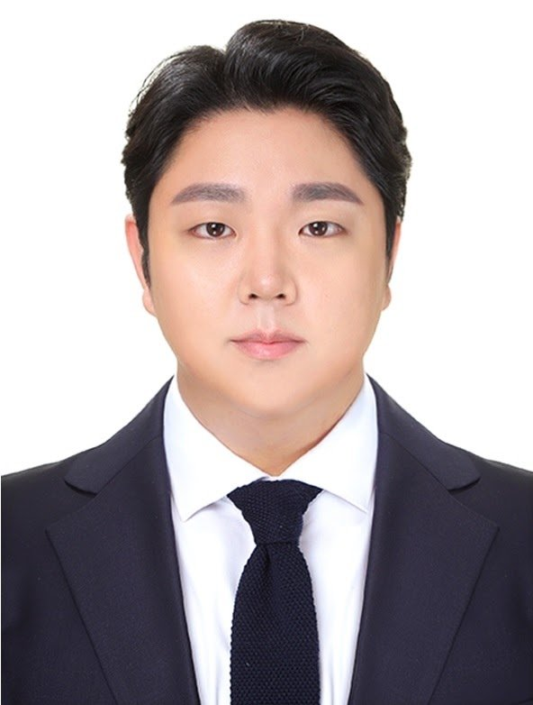
Assistant Professor
Dept. of Information and Telecommunication Engineering,
Incheon National University
Ph.D. in Electrical and Electronic Engineering, Yonsei University, Seoul (March. 2014 ~ Feb. 2021)
• Combined Master & Ph.D. in Electrical and Electronic Engineering (Advisor: Prof. Tae Wook Kim)
B.S. in Electronic and Electrical Engineering, Dankook University, Kyung-Ki (March. 2010 ~ Feb. 2014)
Incheon National University, Incheon, Republic of Korea (March. 2025 ~ Present)
- Dept. of Information and Telecommunication Engineering, Assistant Professor
Andong National University, Andong, Kyungpook, Republic of Korea (March. 2023 ~ Feb. 2025)
- Dept. of the Electronic Engineering, Assistant Professor
Samsung Electronics System LSI Business, Hwa-Seong, Republic of Korea (March. 2021 ~ Feb. 2023)
- Staff Engineer, Design Platform Development Team & Connectivity Development Team
(Former) IP Development Team, Mixed-Signal Circuit Design Team
➢ Experience of the IEEE 802.15.4/4z (UWB) RF Transceiver Design
➢ Design of UWB Tx including transmitter building block such as power amplifier, gain amplifier, mixer, etc.
➢ RF Switch IC Design with wideband and high power handling.
➢ Transformer, Inductor Passive Device Design using EM Simulation
Geunhaeng Lee received a B.S. degree in electronic & electrical engineering from Dankook University, Kyung-Ki, Republic of Korea (ROK), in 2014, and a Ph.D. degree in electrical and electronic engineering from Yonsei University, Seoul, ROK, in 2021, respectively.
He was with System LSI Business, Samsung Electronics, Hwaseong, ROK from 2021 to 2023 as a Staff Engineer, where he was involved with design of UWB RF transceiver (IEEE 802.15.4z). From 2023 to 2025, he was with the dept. of Electronic Engineering, Andong National University, Kyungpook, ROK. Since March 2025, he has been with the dept. of Information and Telecommunication Engineering, Incheon National University, Incheon, ROK as an assistant professor.
His research interests are RF amplifiers including PA and LNA, mixed-signal circuits, and circuit & system for wireless communication. He is also interested in research on UWB transceiver systems, mm-wave ICs and digital transmitter.
Dr. Lee received a bronze prize of the circuit design division at the 27th Humantech Paper Award hosted by Samsung Electronics in 2021.
He also serves as a technical reviewer for IEEE SSCL, IEEE TCAS-II, IEEE TBioCAS and IEEE JSSC.
[1] Bronze Prize, 27th Samsung Electronics Humantech Awards (Circuit Design Division) (Feb. 2021)
➢ A 1.125 Gbps, 28 mW, 2m IR-UWB CMOS Transceiver using Extended – Multi Pulse Position Modulation
We are looking for passionate students. Interested students can contact us anytime !
전자회로 및 반도체 회로 설계에 관심이 있는 학부 연구생 및 진학에 관심 있는 학생을 모집합니다.
관심이 있으신 학생은 하기 메일로 면담 요청을 해주시기 바랍니다. (아날로그 회로 설계, RF 통신 회로 등)
학과는 정보통신공학과 또는 지능형반도체공학과(협동과정)으로 진학이 가능합니다. 멤버에게는 등록금 및 장학금 지원이 가능합니다.
Master's Degree Course (2026-1)
Research Area : Beamforming Impulse Radar Transceiver IC for 3D Space Estimation
siwon7879@naver.com
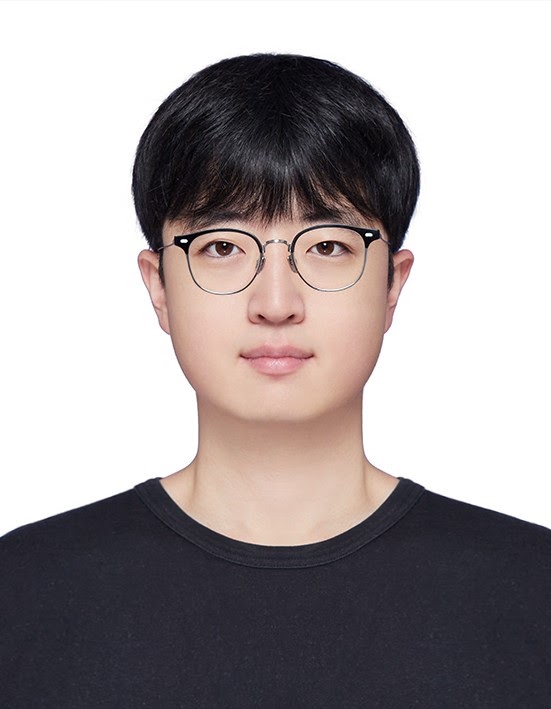
Master's Degree Course (2026-1)
Research Area : Compound RF Building Block Research for Effect of Radiation
wood0330@inu.ac.kr
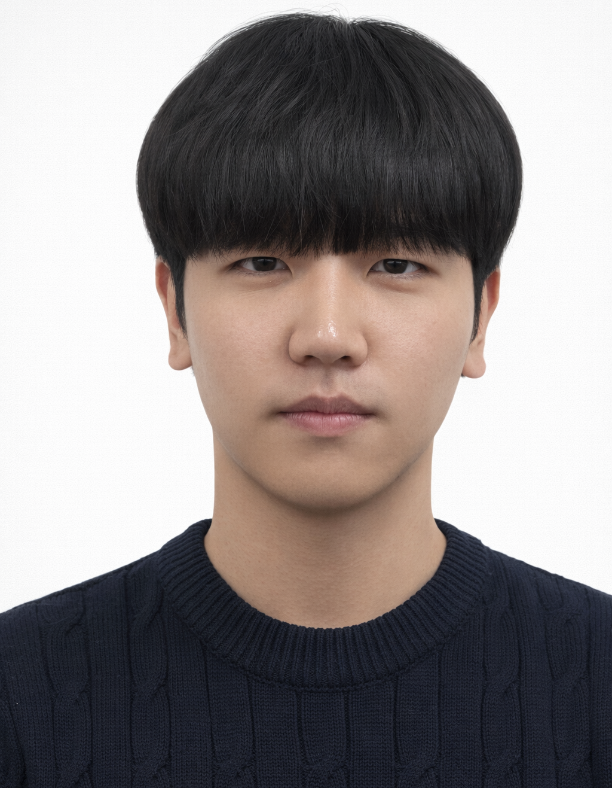
Intern (Master’s Degree admission expected in 2027)
Research Area : Gbps UWB Transceiver Design with Enhance Modulation Scheme
dudcks0731@inu.ac.kr
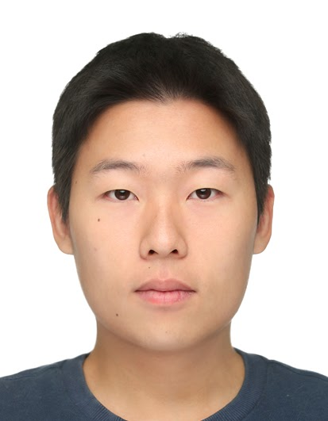
Intern (Master’s Degree admission expected in 2028)
Research Area : X-Band Compound Semiconductor IC with EM Device
0423csj@inu.ac.kr
Students who are interested or curious about the research can contact me anytime.
I will gladly explain the research in detail and help spark your interest!
Please don't hesitate to reach out and feel free to schedule a meeting. 🙏
아래 연구가 궁금하거나 흥미가 있는 학생들은 언제든 연락주세요.
연구에 대해 자세히 설명드리고 흥미를 가질 수 있게 도와드리겠습니다!
연락하는 것을 두려워 하지 마시고 편하게 면담 신청해주시기 바랍니다. 🙏
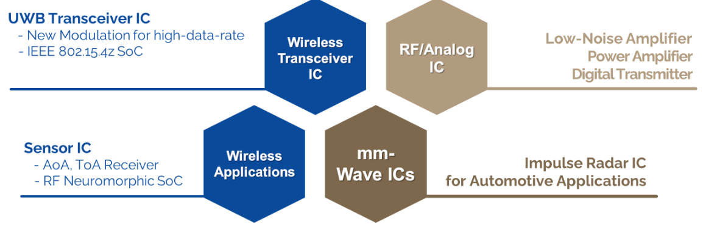
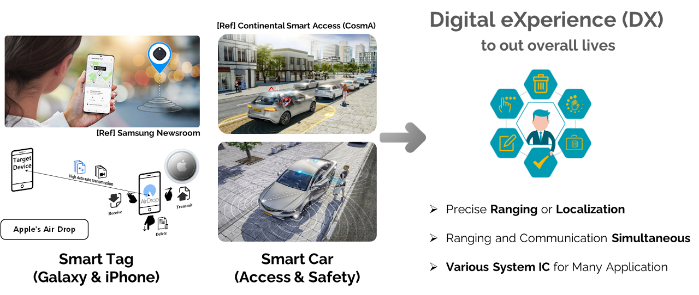
And these days, UWB application is the most important key idea for various application. UWB technique is applied to any smart devices for communication and precise ranging simultaneously. And, also as we know the mm-wave IC is applied to any automotive radar application or 5G system.
1-a. High-data-rate (>Gbps) Fully Integrated Transceiver IC with advanced modulation technique
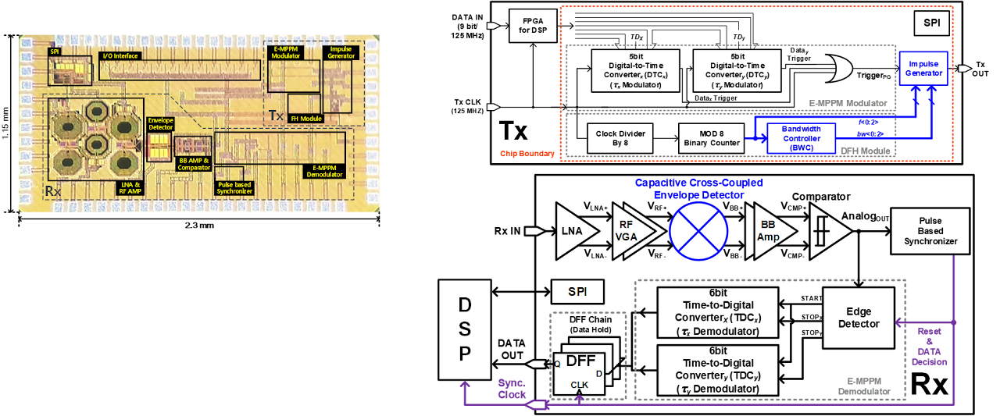
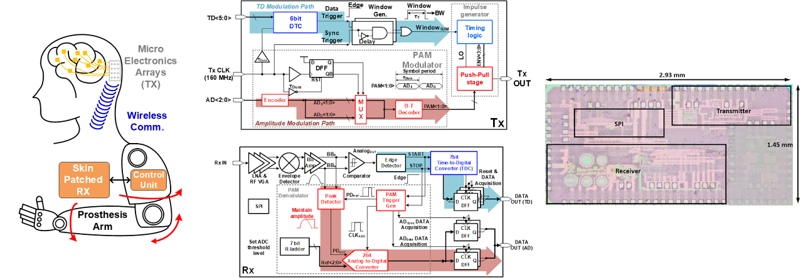
1-b. IEEE 802.15.4z Standard Transceiver (Designed from Samsung) for Precise Ranging and Communication Simultaneous and Child Presence Detection
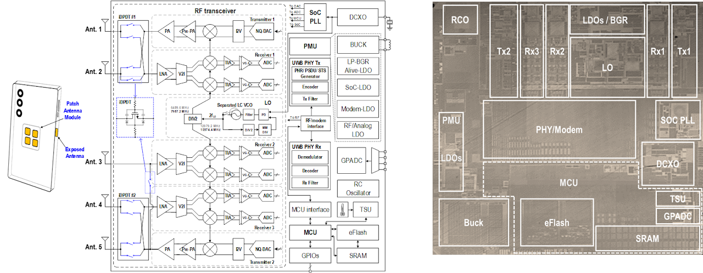
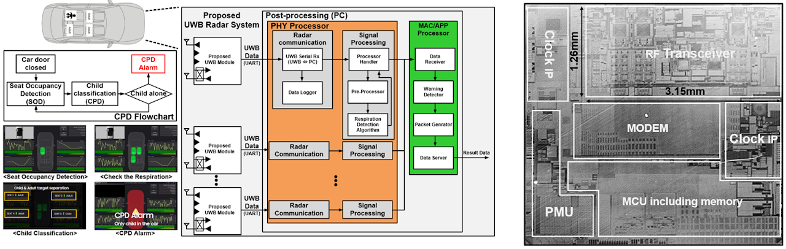
2-a. A Time Domain Artificial Intelligence Radar System Using 33-GHz Direct Sampling for Hand Gesture Recognition
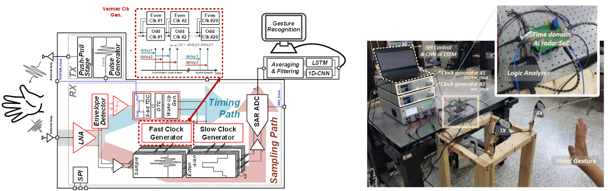
The convergence of AI and RF leads to the expansion of new boundaries and a paradigm shift.
2-b. Angle of Arrival wireless sensor for localization.
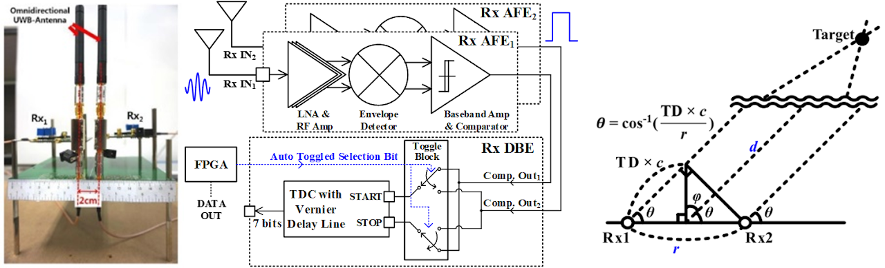
2-c. Position Tracking using the time difference of arrival (TDOA) using a receiver array
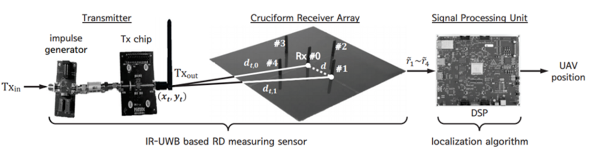
3-a. Wideband LNA using Active Inductor for multi-standard
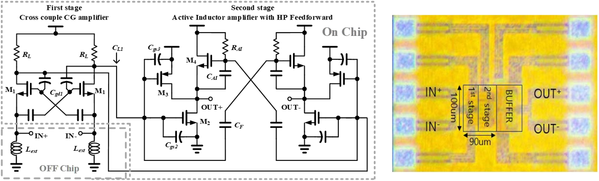
3-b. High-speed Active Sampler using post-distortion for Linearization
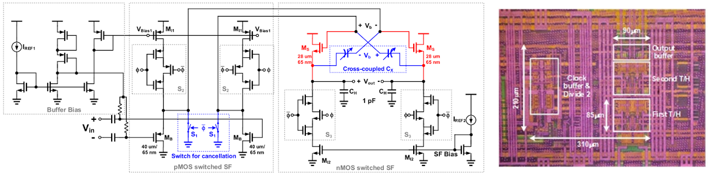
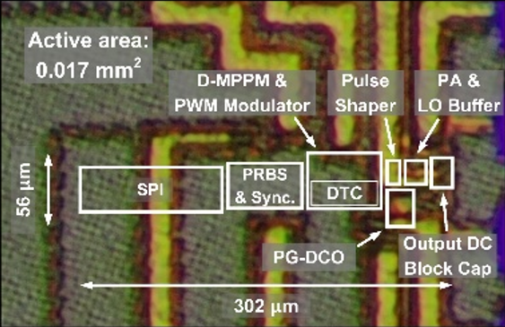
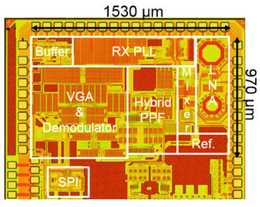
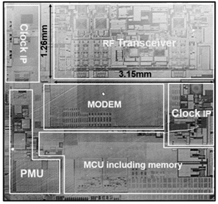
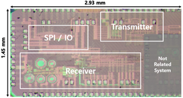
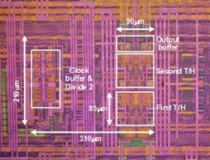
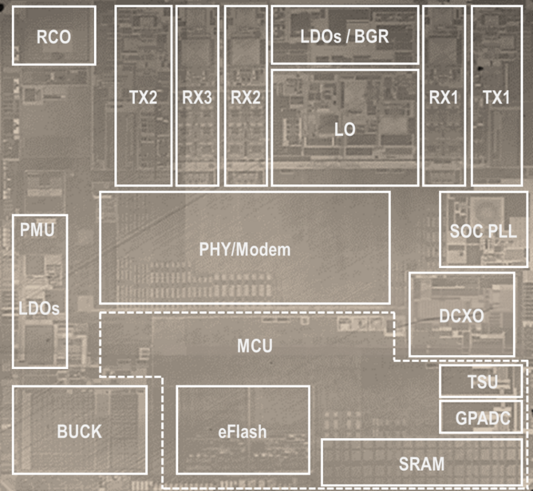
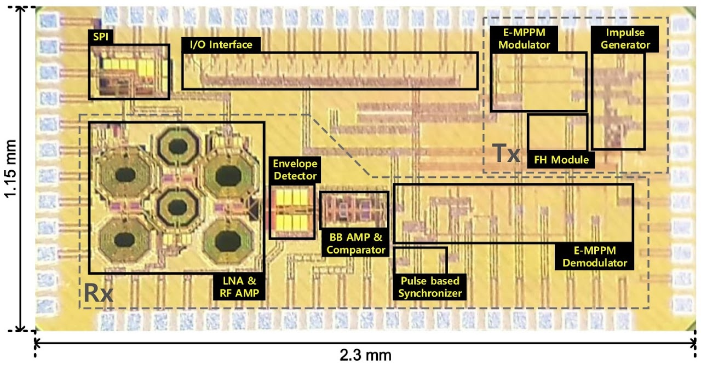
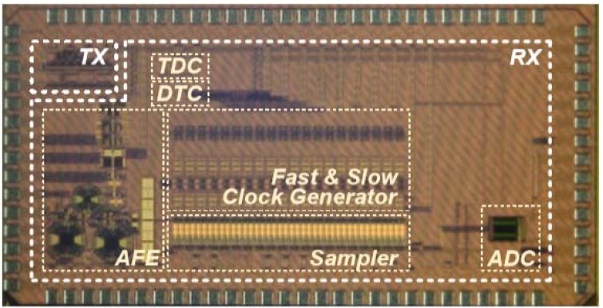
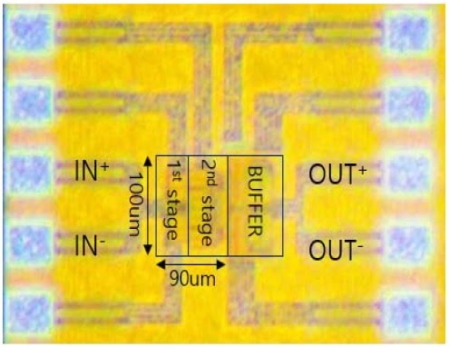
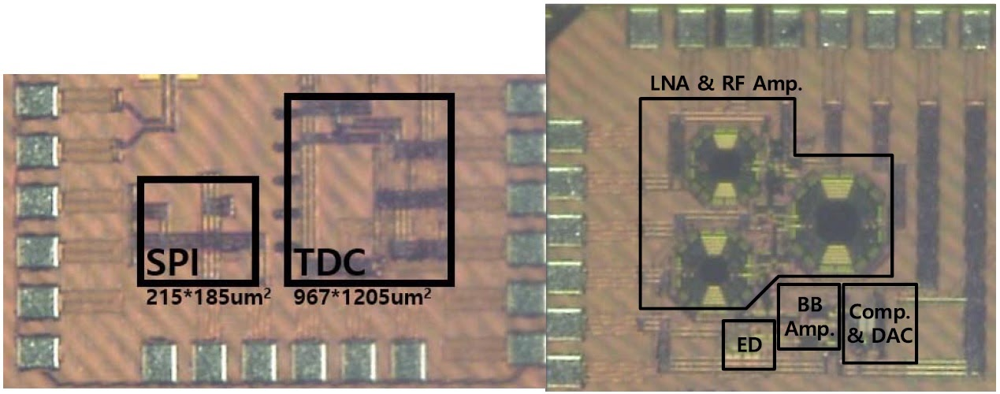
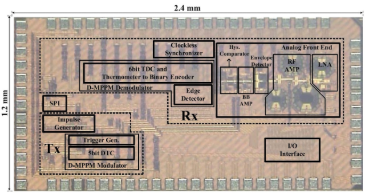
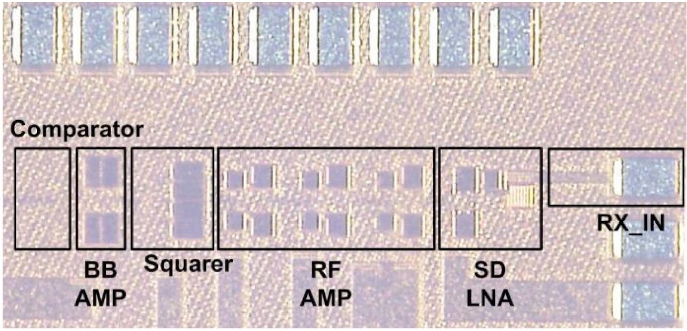
[6] New connectivity solution – Ultra wideband System Design (Communication to geometrical Sensing in RFIC) - Prof. Geunhaeng Lee
LIG Nex1
26.05.14
[5] Basic Electronic Theory Seminar for Junior Freshman Engineer - Prof. Geunhaeng Lee
STATS ChipPAC Korea
25.11.26
[4] 삼성전자 현직자의 세미나 및 질의응답 시간 - Dr. Hyun-Gi Seok from Samsung Electronics S.LSI
2025 dept. of ITE, INU Open Lab Seminar
25.09.30
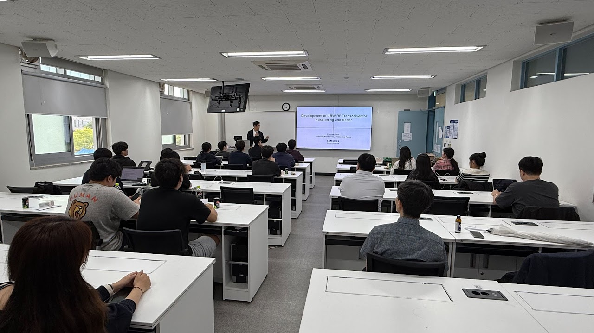
삼성전자 석현기 박사님께서 인천대학교 정보통신공학과 OPEN Lab. 행사에 참석해주셔서 학생들에게 귀감이 되는 얘기와 많은 조언들을 해주셨습니다.
석현기 박사님께서 참석해주신 덕분에 더욱 더 뜻깊은 OPEN Lab. 행사가 될 수 있었던 것 같습니다.
[3] UWB 송수신기 개발 동향 [Link] - Prof. Geunhaeng Lee
24th RF/Analog IC Workshop (제 24회 RF/아날로그 회로 워크샵)
24.09.27
[2] Next Connectivity Solution: UWB 기술 소개 및 송수신기 연구 개발 동향 [Link] - Prof. Geunhaeng Lee
2024 KIEES Summer Conference (2024 전자파학회 하계종합학술대회)
24.08.21
[1] 최신 반도체 산업 동향-삼성전자 전현직자가 들려주는 이야기 [Link] - Prof. Geunhaeng Lee
Pusan National University, Semiconductor Engineering Track
23.08.28
[2026.08] Siwon has been selected for the 2026 Master's Student Research Grant Program (석사과정 연구장려금). The selected research project is titled “임펄스 기반 다중 배열 수신기를 이용한 고정밀 3차원 위치 추정 시스템 IC 설계”. Through this research grant, Siwon will receive a total of 12 million KRW from September 2026 to August 2027. Congrats!
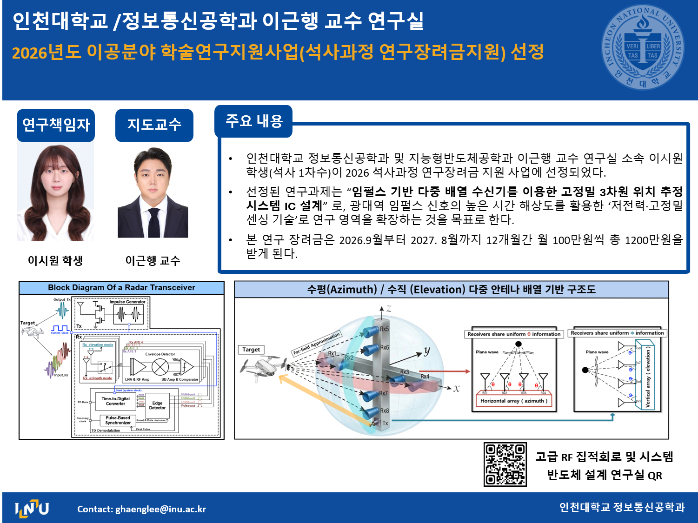
🔍 클릭 확대[2026.08] Our research proposal, "차세대 통신-센싱 융합 환경을 위한 초저전력 3차원 각도·거리 통합추정 임펄스-라디오 UWB 하이브리드 빔포밍 레이다 SoC," has been selected for the Basic Research Program (기본연구) by the National Research Foundation of Korea (NRF, 한국연구재단). The project will run for 60 months, from September 2026 to August 2031. As our research group's first external project, we hope this will serve as a major stepping stone for our future researches.
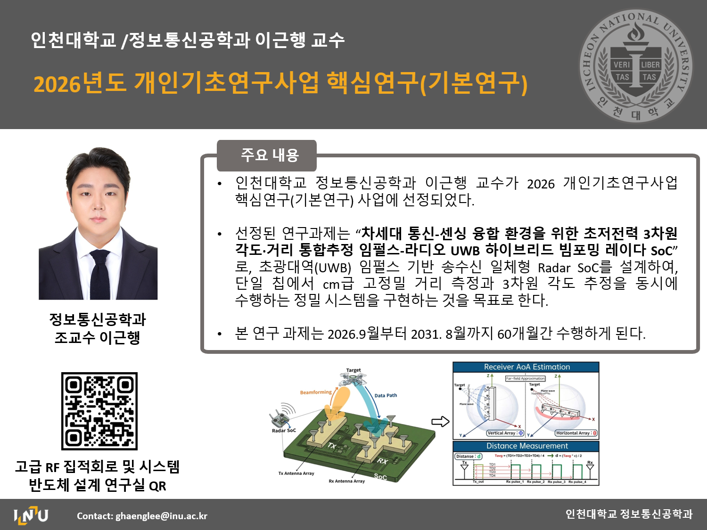
🔍 클릭 확대[2026.02] Youngchan and Sungjae have newly joined our ARCS Lab. They will be working in the lab as interns and plan to pursue their Master’s degrees with us after graduation. We warmly congratulate them on joining the lab and wish them a meaningful and rewarding graduate journey.
[2025.09] Siwon and Sangwoo have joined ARCS LAB as new members. They plan to begin their research as master's students starting in the 2026-1 semester. We warmly welcome them and hope their degree journey will be both meaningful and rewarding!
[2025.07] Our paper (A 2.54 Gbps, 1.22 pJ/bit, IR-UWB Transmitter with a Power-Gating Technique) has been accepted to IEEE TCAS-II. I have been involved as a co-author. I would like to thank my supervisor professor, Tae Wook Kim (Corresponding author) and my co-worker, Kyungseok Song (1st)
[2025.05] Our paper (ULP Sliding-IF Receiver with 25% Duty Passive Mixer and Enhanced LO Feed-Through Rejection) has been accepted to IEEE MWTL. I have been involved as a corresponding author. I would like to thank my co-worker, Dr. Hyun-Gi Seok, and research crews of NICE Lab., KAIST (PI : Prof. Sang-Gug Lee).
[2025.03] I will be transitioning from the dept. of electronic engineering at Andong National University to the dept. of information and telecommunication Engineering at Incheon National University starting from the 2025 spring semester. I sincerely thank the faculty members at Andong National University. Please support me in this new beginning!
[2025.02] Our invited paper from IEEE SoVC 2024 (High-Sensitivity, Low-Power IR-UWB Radar Transceiver with Self-Interference Resistance for Child Presence Detection and Precision Positioning) has been accepted to IEEE JSSC. I have been involved as a co-author. I would like to thank my co-workers at Samsung Electronics.
[2024.09] Our paper (A 6-9 GHz 1.28 Gbps 76mA Amplitude and Synchronized Time Shift Keying IR-UWB CMOS Transceiver for Brain Computer Interfaces) has been accepted to IEEE Transactions on Biomedical Circuits and Systems. I have been involved as a first-author (1st). I would like to thank my supervisor professor, Tae Wook Kim (Corresponding author) and my co-workers (Dr. Junyoung Jang, Mr. Kyungseok Song; co-author)
[2024.07] My paper (Ultra-Low Power 1 Gbps Amplitude Modulation Ultra-Wideband CMOS Transmitter) has been accepted to IEIE Journal of the Institute of Electronics and Information Engineers as a sole author.
[2024.01] Our paper (An Active Track and Hold Circuit with Linearity Enhancement Technique and Its Analysis using Volterra Series) has been accepted to IEEE Access. I have been involved as a co-author (2nd). I would like to thank my supervisor professor, Tae Wook Kim (Corresponding author) and my co-worker (Dr. Junyoung Jang, 1st author)
[2023.09] Our invited paper from ISSCC 2023 (A Fully Integrated IEEE 802.15.4/4z Compliant 6.5-8GHz UWB System-on Chip RF Transceiver Supporting Precision Positioning in CMOS 28nm Process ) has been accepted to IEEE JSSC. I have been involved as a co-author (3rd). I would like to thank my co-workers at Samsung Electronics.
[2023.04] Our paper (Passive IR-UWB Localization System for UAV-based Electric Facility Inspection during GPS Outage) has been accepted to IEEE Access. I was involved as a co-author (2nd)
[2023.04] Our paper (Fully integrated UWB Transceiver, IEEE 802.15.4z) has been invited from IEEE JSSC. I was involved as a co-author (3rd)
[2023.03] Geunhaeng has been with dept. of electronic engineering, Andong National University as an assistant professor.
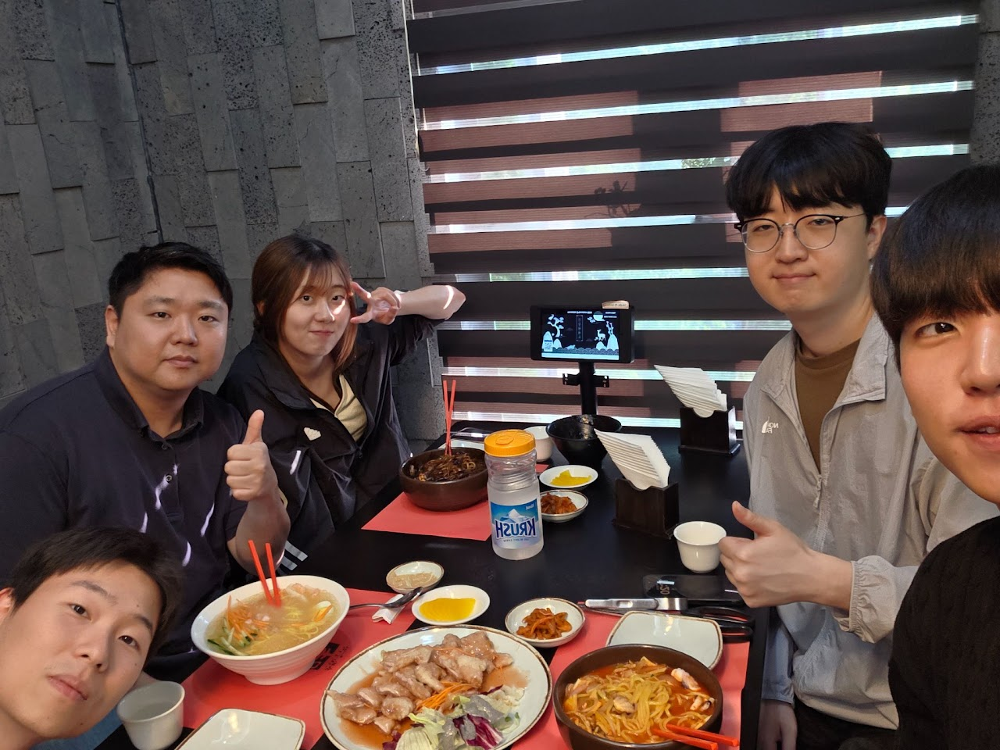
We have successfully wrapped up the first semester here at ARCS LAB.
It was a crucial semester for establishing our initial IP, and thanks to the hard work and dedication of our lab family, I believe we've laid a fantastic foundation for our lab's future growth.
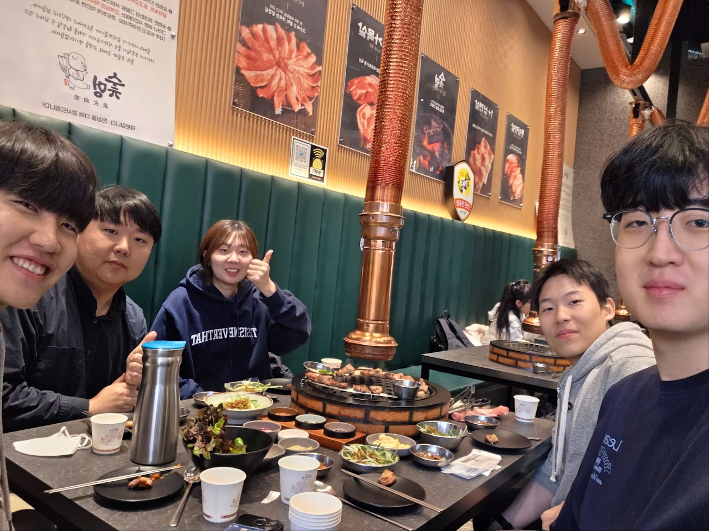
This 2026 spring semester is the real starting point for our ARCS Lab.
Let's all give it our best to do meaningful research and get great results!